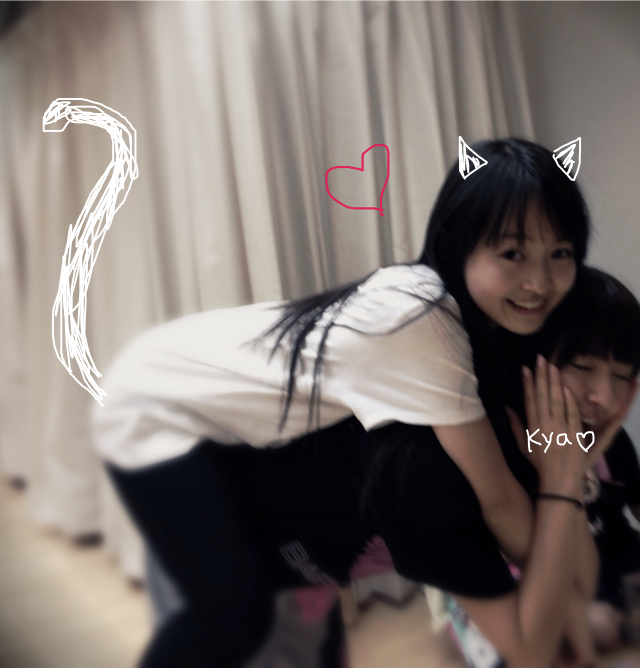

| 2011/11 17 Thu | 4回目*ベビたん |
まりかだよっ。ベビたんだよっ。
いつも読んでくださってる方、ありがとうございます。
.....いよいよ<3!!
＜告白の秋＞***生声録音会***
17日!!!!
うひょ-----------!!
どきどきわくわくです。
みなさんに会うの、とっても楽しみです。
.....変顔...披露するかわかりませんが
みなさんも楽しみにしててくださいね><笑
録音会のメンバーはみんな私よりおねーちゃんなので
緊張でわぁぁってなると思います。
がんばるよ:D!!
ええ声でると思います。きっと
そしてコメントいっぱ---------------いで今日もほかほかでした*^^*
1回目2回目でコメント反映されてないと書いてありましたが反映されてましたよ♪
うれしいです。
みなさんからのあたたかいコメントは何度も読み返してます。
.....................................
＊ニックネームのお話
なぜ「ベビたん」なのか...
それは私が童顔だからさっ!←
もっとちゃんと話すと、ですね。
最初の頃、私前髪なかったんです。
で、おもいきって前髪つくってみよう!!と考え、えいっ!とばっさり切りました。
メンバーに披露したら大好評でして、そのときヤマトマトに「なんか、ベビたんみたい」と言われたのがきっかけです。笑
せっかくメンバーからもらった初めてのニックネームなので、大切にしたいです...*
でも、頭文字とか全く入ってないのでしっくりこないのも分かります。!!
なので、みなさん!!
これからは私のこと、まりかorベビたん のどちらか呼んでください。
その時の気分でよろしくお願いします笑
新しいニックネームもwelcomeです!
＊出身地について
小2まで大阪府に住んでいました。
実は今でも関西弁ばりばりです。←
抑えよう抑えようと思ってたら結果、こんな中途半端な口調になってしまいました。笑
ゆるしてください。
もう長く神奈川に住んでるので一応神奈川県出身です。!
＊髪型
ポニーテールほめてくださりありがとうございました~★
いろんな髪型したいからBloGでときどき載っけるかも!!
今はダウンヘアーでがんばりまぅす!
＊質問答えるじょ-い^^!!
@まりたんは甘えん坊？
...そうですね。うーん.....甘えん坊です!だって１人さびしい;(
@どんな私服着てるの？
なんて言えばいいのかなぁ??
基本ボーイッシュです。(ボーイッシュって言ってもそんなに男子!な格好はしてません><)
ちょっとしたくせのあるデザインには目がいってしまいます<3!!
ダメージとかスタッズとかヴィンテージレースだいすき***
古着すきです。ぼうしすきです。
へへっ!顔に似合わないだろう!! ...私もそう思う笑
@写真の加工は何でしてる？
iphoneの有料アプリを使って加工してます♪
・一眼トイ
・スケッチ
まりたんっていうニックネームかわいいですね*きゅん<3
ありがとうです。
＊いちばん最後のあれ。
最後に「ベビたん*****bA by marika」がありますが
bA っていうのは後ろのbyとくっつけたらbabyになりますよ~♪ってやつです。
気づいた方もいらっしゃいますか??
なんでAが大文字なのか......!??
.......それは、なんとなくです。!!
.......................................
しゃし-----ん!

みさみさにおんぶしてもらっちゃた♪みさみさほんとにおねえちゃんみたいなの!
写真のことなのですが、パソコンの都合上2枚しかupできませ-ん泣
ちょっとずつしか載せれないけど、変わらずよろしくです!

いひひっ。
イベント楽しみましょ-!!!
まってます!*
ベビたん*****bA by marika